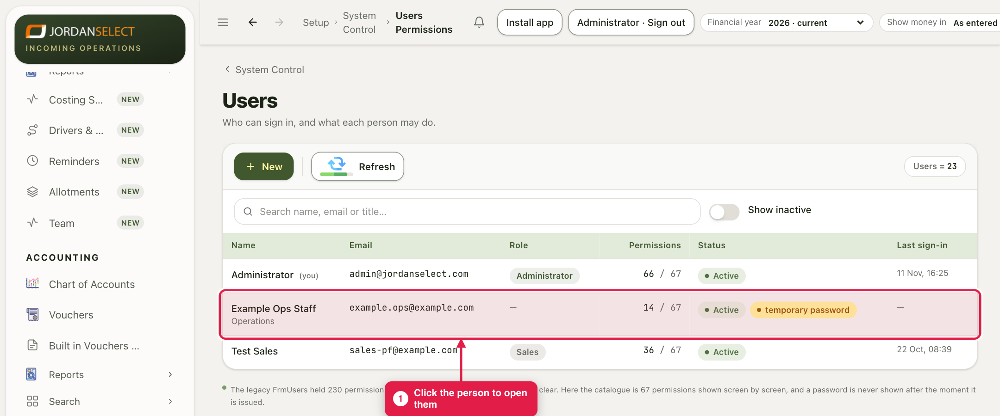
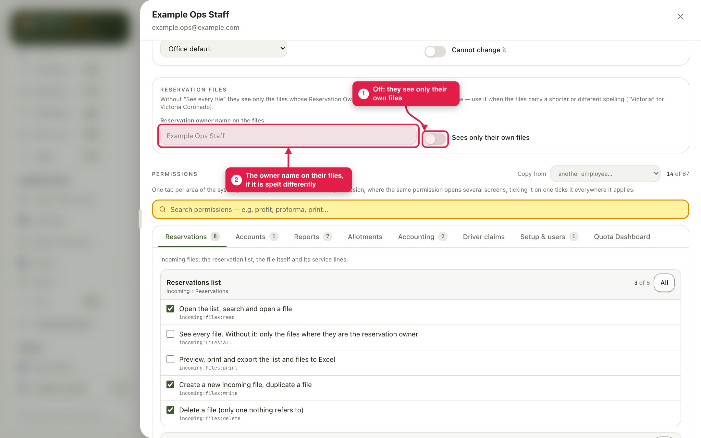
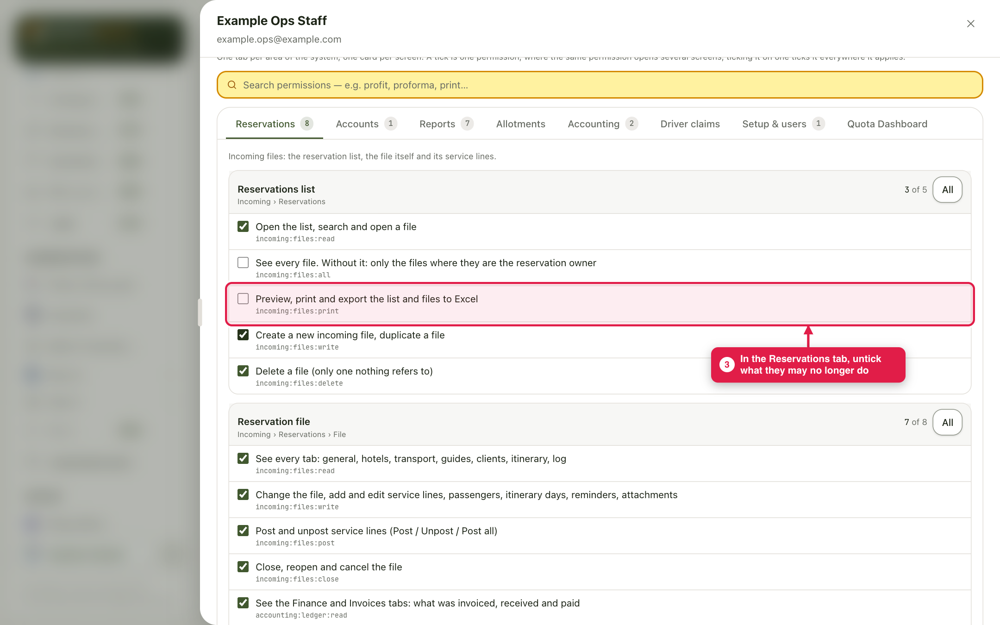
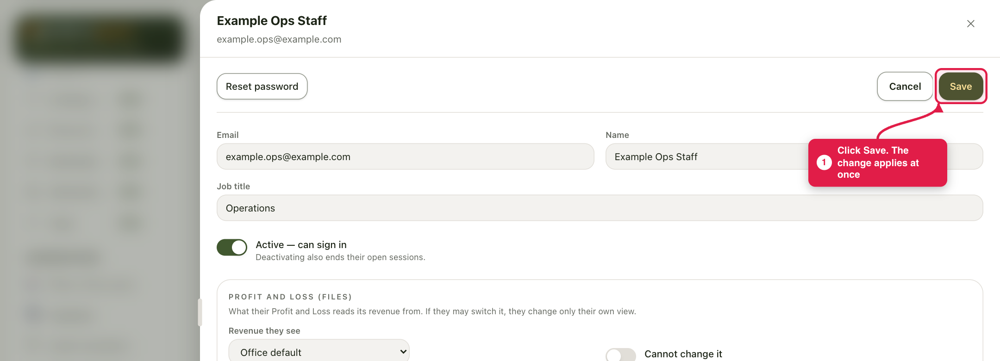
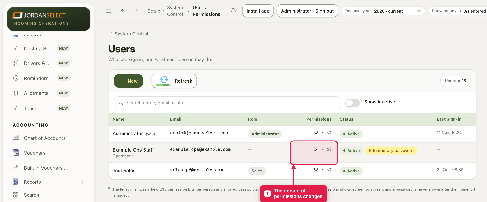

Someone’s job has changed, or they should see less. Choose which files they see, tick or untick their permissions, and save.
WhoThe administrator
WhereSetup → System Control → Users Permissions
Takes2 minutes
You needWhat they should now be able to do
How it works
The change applies as soon as you save. Three kinds of control, like the tick boxes of the old system:
Which files. With Sees every file off, they see only the files whose Reservation Owner is their name.
Which screens and vouchers. One tab per area, one card per screen. Receipts, payments, invoices, proformas and each report have their own “see” tick.
Print and Excel. Seeing a list does not mean printing it. Previewing, printing and exporting to Excel each need their own tick.
Some permissions open more than one screen: ticking one on one card ticks it everywhere it applies. That is why other cards can change when you tick one line.
Example in this guide: Example Ops Staff should see only their own files, and no longer print or export the reservation list.
1. Open the person
1
In Users Permissions, click the person.

The Permissions column counts what is ticked, out of 67.
2. Choose which files they see
2
Under Reservation files, switch Sees every file off. It now reads Sees only their own files. If the files carry their name spelt differently (“Victoria” for Victoria Coronado), type that spelling in Reservation owner name on the files.

The same switch is the “See every file” tick on the Reservations tab.
3. Tick or untick
3
Click the tab for the area, here Reservations. Untick what they may no longer do, tick what they may now do. The figure on each tab counts what is ticked in it. To find a permission fast, type in the yellow search box (for example print).

“Preview, print and export the list and files to Excel” unticked: they can still open the list, but not print or export it.
4
Scroll back up and click Save.

Cancel leaves everything as it was.
5
The list shows their new count.

Two fewer permissions after the change.
Same as another employeeCopy from, above the tabs, copies every tick from another employee. Check the result before you save.
The change log is for administrators onlyOnly administrators can read the change log and a file’s Log tab. It cannot be ticked for anyone else. See Reading the change log.
Your own userYou cannot take away your own right to manage users. It is marked yours and cannot be unticked, so the CRM is never left with nobody able to manage it.
Last checked: 11 Nov 2026 · Screens shown are from a test copy of the CRM with made-up data.